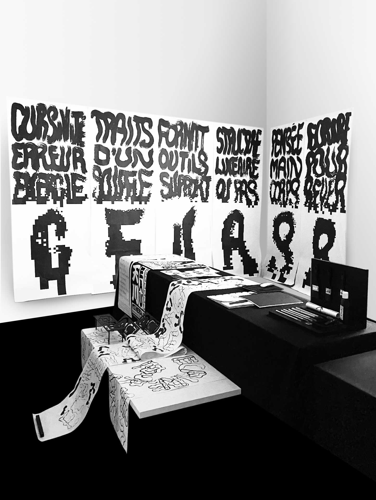
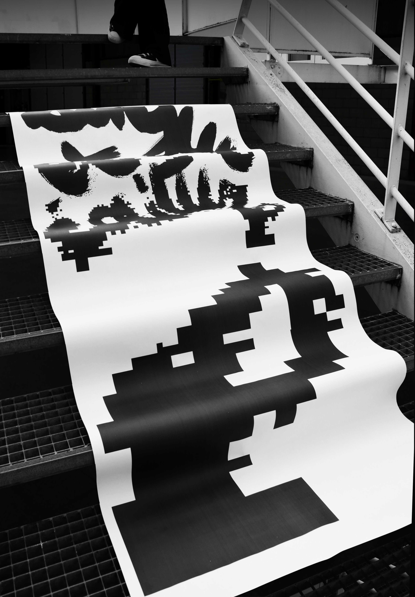
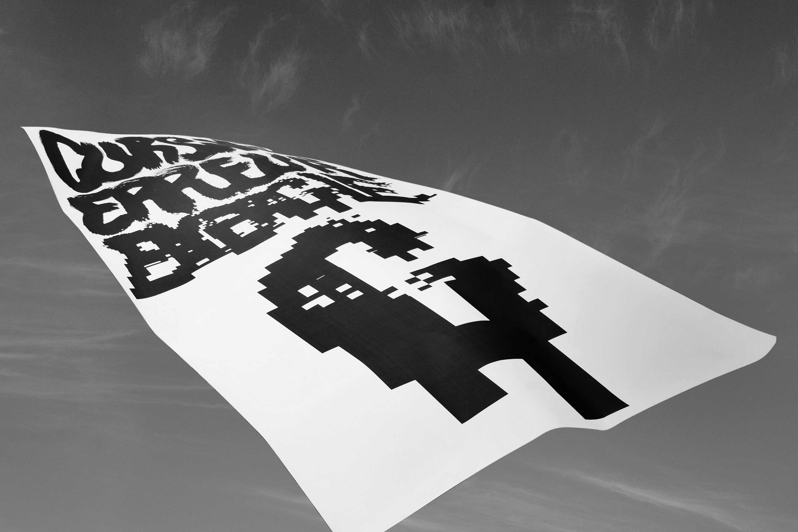
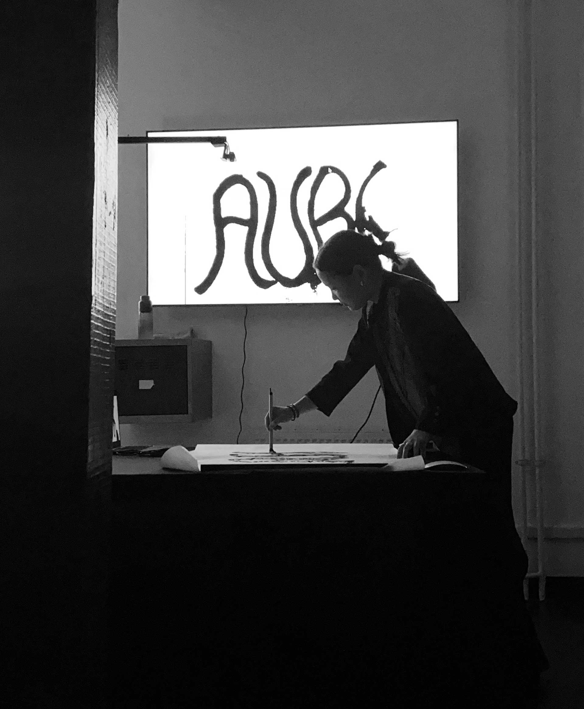
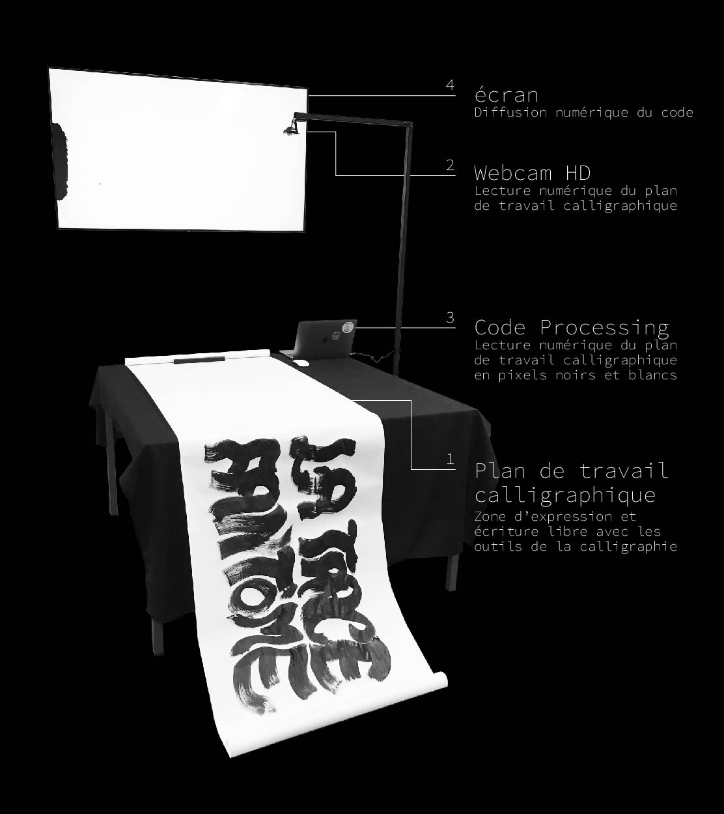

Diploma 2021


Digitalize and treat the flying white
The process of research has shown that Bitmap is the most faithful digital tool to the essence of calligraphy, which is only a duality of ink and paper. No color, no gradient. Bitmap is about pure digitalization: it treats the image with black and white pixels only, going along with the duality ink/paper. It is a binary process of black and white, where grey does not belong, nor on paper, nor on our screens.
These posters are made of a shade of twelve resolution gradients, from 600 dpi on the top, to 2dpi on the bottom. The visuals are melting and re-enforcing their appearance at the same time through a strong pixellization. The sensitivity of the flying white is treated on different levels and through unexpected visual aspects.
These posters are made of a shade of twelve resolution gradients, from 600 dpi on the top, to 2dpi on the bottom. The visuals are melting and re-enforcing their appearance at the same time through a strong pixellization. The sensitivity of the flying white is treated on different levels and through unexpected visual aspects.
Numériser et traiter la trace fantôme
Il s’est avéré dans la recherche, que le Bitmap est le moyen de digitalisation la plus fidèle à l’essence de la calligraphie, qui est uniquement cette dualité de l’encre et du papier. Ni la couleur, ni le dégradé ne sont présents. Le Bitmap est un processus numérique de pixellisation pure : c’est-à-dire que l’image est traitée uniquement de pixels noirs et blancs, au reflet de la dualité encre-papier. C’est une logique binaire, de noir et de blanc, où le gris n’existe pas ni sur la papier, ni sur nos écrans.
Ces affiches mettent en avant le dégradé en 12 étapes,du haut en bas, en résolution de pixels bitmap. Il part d’une numérisation à 600dpi, et atteint finalement 2dpi. Les visuels ont l’air de fondre dans leur formes et leur sensibilité de la trace fantôme. Cet axe de recherche assume le pixel radicalement. L’essence de la calligraphie est dans également présente dans ces pixels, sous un autre aspect graphique innattendu.

Ces affiches mettent en avant le dégradé en 12 étapes,du haut en bas, en résolution de pixels bitmap. Il part d’une numérisation à 600dpi, et atteint finalement 2dpi. Les visuels ont l’air de fondre dans leur formes et leur sensibilité de la trace fantôme. Cet axe de recherche assume le pixel radicalement. L’essence de la calligraphie est dans également présente dans ces pixels, sous un autre aspect graphique innattendu.
Writing has travelled through time and space. Until today, it remains a tool to communicate, to think and to share information. This diploma projet links japanese calligraphy between different cultures and generations, in this numeric era. The body comes into action when practising calligraphy and creates imperfect and sensitive black shapes expressing an energy, the flying white. In the numeric world where many rules are applied on writing, this energy goes into the shadow.
L’écriture a traversé le temps et l’espace. Elle permet toujours aujourd’hui de communiquer, de penser et de transmettre l’information. Ce projet de diplôme recherche la transmission tranculturelle et transgénérationnelle de la calligraphie japonaise dans l’ère du numérique. Cette pratique fait vivre une gestuelle corporelle libre crée des formes noires imparfaites et sensibles qui transmettent une énergie, la trace fantôme. Cette énergie issue d’un lacher-prise s’éclipse progressivement à l’égard du numérique où l’écriture est rigidifiée.



Live digital transcription of hand-writtings to pixellized images
The webcam translates the hand-written ink calligraphy to a language of pixels. It is connected to the computer which is operating a Processing coding that treats the brightness of pixels readby the webcam. Depending on the brightness, the created pixel will be either white, or black.
Because the code is treating sensitive settings such as brightness and contrast, lightnings of the room can create variations in the result image even if the installation is remaining still. The final digital transcription created will never be twice the same, neither the hand-written calligraphies.

Because the code is treating sensitive settings such as brightness and contrast, lightnings of the room can create variations in the result image even if the installation is remaining still. The final digital transcription created will never be twice the same, neither the hand-written calligraphies.

Transcrire numériquement les écrits manuscrits en visuels pixellisés, en direct
La webcam transcrit numériquement en pixels la calligraphie manuscrite dessinée à l’encre de chine sur le plan de travail. Elle est connectée à l’ordinateur qui lit un code Processing, permettant de transcrire la luminosité des pixels lus par la webcam, en image binaire donc de pixels noirs et blancs.
Comme le code réagit à la luminosité, soit au contraste de l’image : des facteurs tels que les sources de lumières peuvent faire varier l’image numérique obtenue. Vous pouvez ici observer une variation dans les pixels, alors que mon installation ne bouge pas. Ce code permet de ne jamais obtenir deux fois le même résultat, la même image numérique obtenue, tout comme la calligraphie, où nous n’obtiendrons jamais deux fois la même chose.
Comme le code réagit à la luminosité, soit au contraste de l’image : des facteurs tels que les sources de lumières peuvent faire varier l’image numérique obtenue. Vous pouvez ici observer une variation dans les pixels, alors que mon installation ne bouge pas. Ce code permet de ne jamais obtenir deux fois le même résultat, la même image numérique obtenue, tout comme la calligraphie, où nous n’obtiendrons jamais deux fois la même chose.